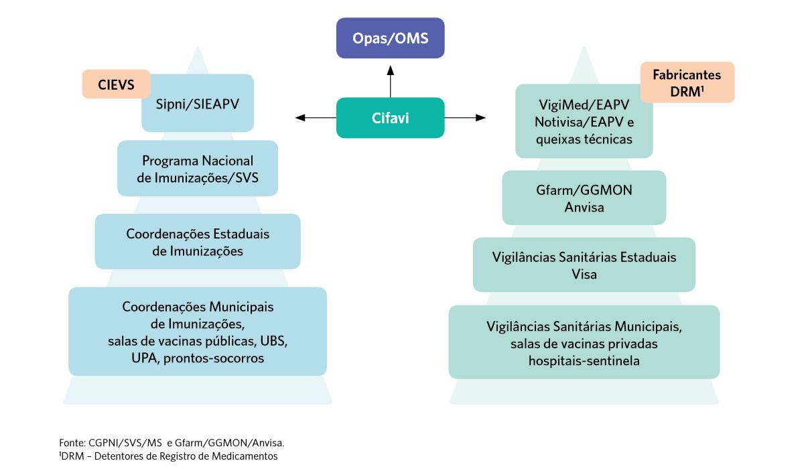

Farmacovigilância de Vacinas no Brasil
No Brasil, a vigilância dos EAPV é realizada pelo Programa Nacional de Imunizações (PNI) do Ministério da Saúde, pelos laboratórios produtores de vacinas, pelos profissionais de saúde e pela população usuária. O PNI foi instituído pelo Ministério da Saúde em 1973, dando início a uma nova etapa na história das políticas de saúde pública, com foco na prevenção e contribuindo para a redução da morbidade e mortalidade por doenças transmissíveis.
Com o aumento do número de vacinas no calendário básico ao longo dos anos e a ampliação do acesso da população, tornou-se fundamental o estabelecimento de um sistema de vigilância de EAPV.
A necessidade de orientar e padronizar a notificação e investigação dos casos de EAPV levou o Ministério da Saúde a publicar, em 1998, a primeira edição do Manual de Vigilância Epidemiológica de Eventos Adversos Pós-Vacinação, que está na 4ª edição.
A necessidade de orientar e padronizar a notificação e investigação dos casos de EAPV levou o Ministério da Saúde a publicar, em 1998, a primeira edição do Manual de Vigilância Epidemiológica de Eventos Adversos Pós-Vacinação, que está na 4ª edição
Em 2000, as notificações passaram a ser informatizadas pelo Sistema de Informação para EAPV (SI-EAPV). Os EAPV foram incluídos na lista de agravos de notificação compulsória em 2005, atualizados pela Portaria nº 264, de fevereiro de 2020.
Veja a evolução do Programa Nacional de Imunizações e Sistemas de Vigilância de EAPV no Brasil, no decorrer dos anos.
Fonte: Adaptado de Oliveira e colab. (2020)
Farmacovigilância de Vacinas: o que deve ser considerado?
O Manual de Vigilância Epidemiológica de Eventos Adversos Pós-Vacinação aponta como principais elementos a serem considerados na condução da farmacovigilância de vacinas:
- As vacinas geralmente são administradas a pessoas saudáveis, incluindo as crianças.
- As vacinas podem ser administradas em uma coorte de pessoas, em grupos de alto risco para complicações de uma doença ou em toda a população.
- Algumas subpopulações podem ser mais suscetíveis a apresentar certos EAPV.
- A idade no momento da imunização pode coincidir com o surgimento de certas doenças relacionadas à faixa etária (por exemplo: transtornos no neurodesenvolvimento).
- A imunização com certas vacinas é obrigatória em alguns países.
- Devido à baixa aceitação de riscos, a investigação rigorosa de EAPV, mesmo que raros, é necessária.
- Os EAPV não graves devem, também, ser cuidadosamente monitorados, pois podem sinalizar algum problema potencialmente maior em relação à vacina ou à imunização, ou, ainda, ter impacto sobre a aceitabilidade da imunização em geral.
- São necessários métodos apropriados para detectar e avaliar qualquer potencial associação causal de eventos adversos graves, raros e/ou inusitados e de eventos adversos que ocorram em subgrupos (surtos).
- Vacinas são frequentemente administradas apenas uma vez ou com intervalos longos, e os EAPV graves muitas vezes impedem a administração de vacinas adicionais.
- Há vacinas que são frequentemente administradas concomitantemente a outras vacinas, tornando difícil a atribuição causal a uma vacina específica.
- A administração de vacinas vivas pode levar a doenças causadas pelos organismos atenuados nos vacinados ou seus contatos, necessitando diferenciação da infecção natural coincidente.
- As vacinas são produtos biológicos complexos, que podem incluir múltiplos antígenos, organismos vivos, adjuvantes e conservantes. Cada componente pode ter implicações de segurança únicas. Variabilidade e mudanças (mesmo pequenas) no processo de fabricação podem ter impacto na qualidade, no efeito protetor e na segurança. Portanto, a informação do lote é de importância crucial.
- As novas vacinas baseiam-se cada vez mais em novas tecnologias, com novos adjuvantes e sítios alternativos de administração, necessitando de sistemas de monitoramento de segurança adaptados.
- Dependendo do modo e da extensão do uso de uma vacina, ela pode provocar imunidade de rebanho para uma doença específica, portanto, ao se avaliar o risco-benefício de uma vacina, a proteção individual e coletiva deve ser considerada.
- Uma comunicação efetiva sobre a segurança de vacinas é desafiadora. Apesar das fortes evidências de que um evento adverso grave não está relacionado à imunização, percepções de danos podem persistir e, potencialmente, ter impacto negativo na imunização da população.
A notificação e investigação de EAPV contribuem para a identificação de complicações raras ou inesperadas das imunizações, caracterização de possíveis sinais de segurança das vacinas e podem identificar um aumento na frequência de eventos esperados. Veja alguns fatos históricos, apontados por Oliveira e colab. (2020), que ilustram o papel da vigilância dos EAPV na garantia da segurança das vacinas:
A investigação detalhada desses episódios sugeriu associação com o uso da TVV e embasou o PNI na troca do fabricante da vacina usada no país, garantindo a segurança e mantendo a confiança dos profissionais de saúde e da população no sistema.
Foi demonstrada sua associação com um aumento de mais de 30 vezes no risco de intussuscepção (um evento adverso grave), na semana seguinte ao recebimento da primeira dose. Isso levou o fabricante a retirar a vacina do mercado, em 1999.
Relatos sobre o aumento da frequência de eventos adversos relacionados temporalmente com essa vacina, principalmente episódios hipotônicos hiporresponsivos (EHH). Os dados foram considerados inconclusivos e contraditórios. Foi realizado um estudo de vigilância ativa, patrocinado pelo Ministério da Saúde. Os resultados foram comparáveis àqueles relatados na literatura para essa vacina. O estudo possibilitou ao PNI responder de forma ágil e robusta à questão levantada pelo sistema de vigilância passiva e garantir o uso seguro e confiável da vacina.
Os riscos aumentados foram traduzidos em um excesso de 96 casos de intussuscepção e cinco mortes nos dois países combinados, números que são superados pelos benefícios da vacinação, que anualmente previne mais de 80 mil hospitalizações e 1.300 mortes nos dois países. O estudo foi realizado em parceria entre o Instituto de Tecnologia em Imunobiológicos - Bio-Manguinhos/Fiocruz - e a farmacêutica GlaxoSmithKline (GSK)
Dados de acompanhamento dos estudos clínicos demonstraram que indivíduos soronegativos antes da vacinação, quando vacinados, desenvolveram anticorpos não protetores contra a dengue. Isso poderia funcionar como uma primo-infecção e levar ao fenômeno conhecido como exacerbação dependente de anticorpos (antibody-dependent enhancement – ADE) em caso de exposição ao vírus da dengue, ou seja, a um quadro clínico mais grave. Houve alteração na indicação da vacina pela Anvisa, que passou a recomendar seu uso apenas para pessoas que já tenham tido ao menos uma infecção por um dos sorotipos do vírus.
Sistemas de vigilância de eventos adversos pós-vacinação no Brasil
Sistemas específicos para o monitoramento da segurança das vacinas são necessários, uma vez que a ocorrência de eventos adversos relacionados às vacinações deve ser imediatamente notificada, investigada e esclarecida. A falta de um sistema de vigilância eficaz pode causar prejuízos incalculáveis à credibilidade de um programa de imunizações e levar a quedas importantes nas coberturas vacinais, difíceis de serem recuperadas. No Brasil,
Os profissionais de saúde têm um papel importante no processo de vigilância de eventos adversos pós-vacinação, uma vez que são a porta de entrada das informações sobre a segurança de vacinas.
Os objetivos do Sistema Nacional de Vigilância Epidemiológica dos Eventos Adversos Pós-Vacinação (SNVEAPV) são:
- Normatizar o reconhecimento e a conduta diante de casos suspeitos de EAPV;
- Permitir maior conhecimento sobre a natureza dos EAPV;
- Identificar eventos novos e/ou raros;
- Possibilitar a identificação de imunobiológicos ou lotes com desvios de qualidade na produção;
- Identificar possíveis falhas no transporte, no armazenamento, no manuseio ou na administração (erros de imunização, programáticos) que resultem em EAPV;
- Estabelecer ou descartar, quando possível, a relação de causalidade com a vacina;
- Promover a consolidação e a análise dos dados de EAPV ocorridos no País em um sistema único e informatizado;
- Subsidiar ou sinalizar a necessidade de realização de pesquisas pertinentes, bem como realizá-las;
- Assessorar os processos de capacitação ligados à área de imunizações;
- Assessorar profissionais da assistência para avaliação, diagnóstico e conduta diante da suspeita de um EAPV;
- Avaliar, de forma continuada, a relação risco/benefício quanto ao uso dos imunobiológicos; e
- Contribuir para a manutenção da credibilidade do PNI junto aos profissionais de saúde e à população geral.
São quatro os entes públicos que compõem o Sistema Nacional de Vigilância Epidemiológica dos Eventos Adversos Pós-Vacinação:
Fonte: Adaptado de Oliveira e colab. (2020)
Eles estão estruturados da seguinte forma:
Sistema Nacional de Vigilância de Eventos Adversos Pós-Vacinação
DRM: Detentor de Registro de Medicamento.
Obs: Os DRM estão sendo cadastrados no VigiMed para relato de EAPV.
O esquema do Sistema Nacional de Vigilância de Eventos Adversos Pós-Vacinação está na página 42 do Manual de Vigilância Epidemiológica de Eventos Adversos Pós-Vacinação (4ª ed.). Você pode baixar a imagem do esquema aqui.
Os instrumentos utilizados no SNVEAPV são:
SI-PNI/SIEAPV (módulo on-line)
Foi desenvolvido para utilização nas três esferas de governo, permitindo o monitoramento dos eventos adversos pós-vacinação on-line, desde a notificação e investigação até a conclusão e/ou encerramento do caso pelos níveis estadual e federal.
O VigiMed é o sistema disponibilizado pela Anvisa, desde de 2019, para que cidadãos e profissionais de saúde relatem eventos adversos a medicamentos e vacinas, contribuindo para a avaliação de segurança dos medicamentos.
É uma versão do VigiFlow, oferecido pela OMS aos Centros Nacionais que fazem parte do Programa Internacional para o Monitoramento de Medicamentos. Assim, os dados brasileiros de notificação de eventos adversos são enviados em formato internacional para a base mundial VigiBase . Para fazer a notificação, em caso de profissional liberal ou usuário do medicamento em questão, não é preciso cadastro prévio. Basta acessar a página do VigiMed e preencher os campos solicitados.
Para que todos os relatos nacionais de EAPV possam ser encaminhados ao VigiBase, o PNI tem compartilhado com a GFARM/Anvisa, por meio de planilhas compiladas ou concessão de acesso, os dados de notificação de eventos adversos recebidos em seus sistemas.